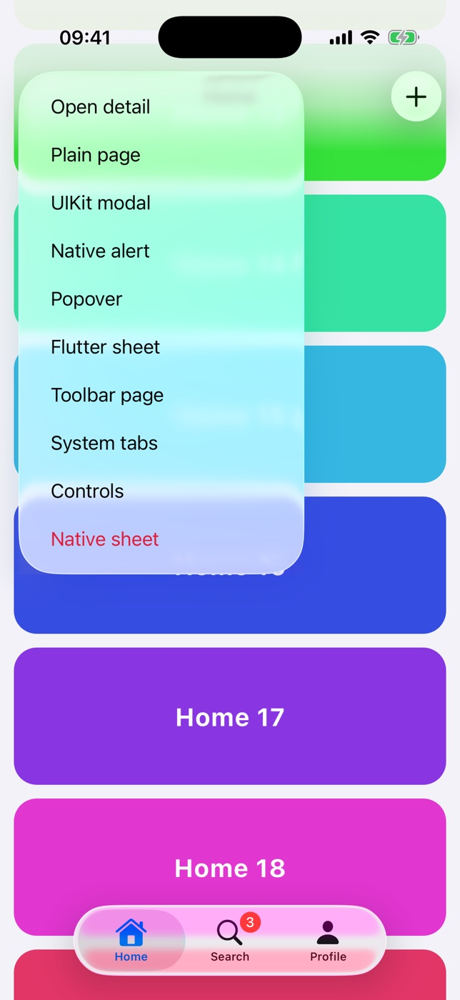
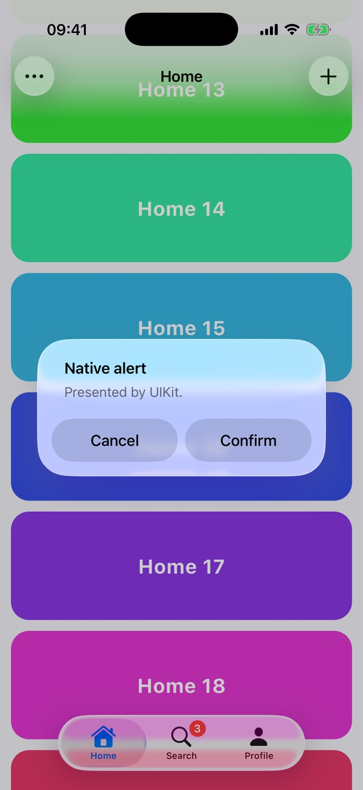
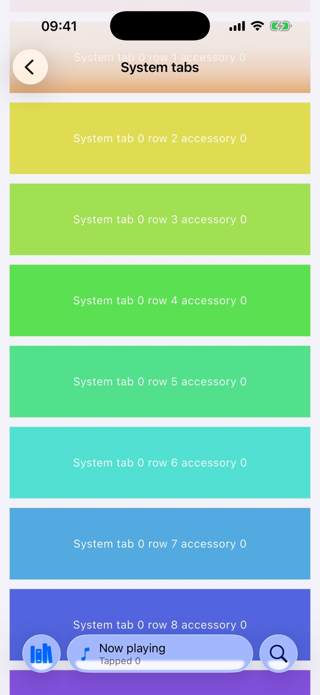
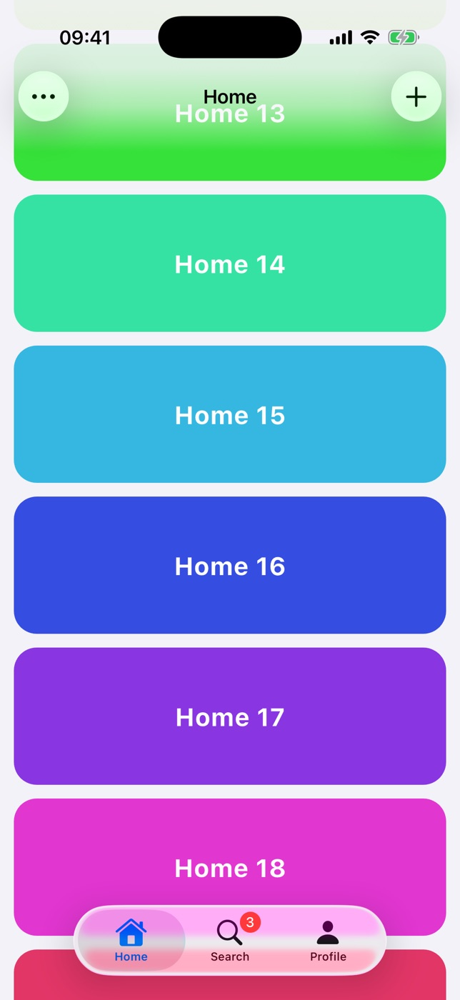
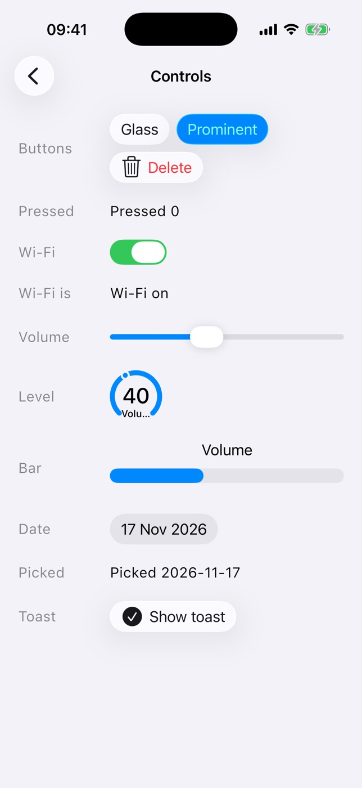
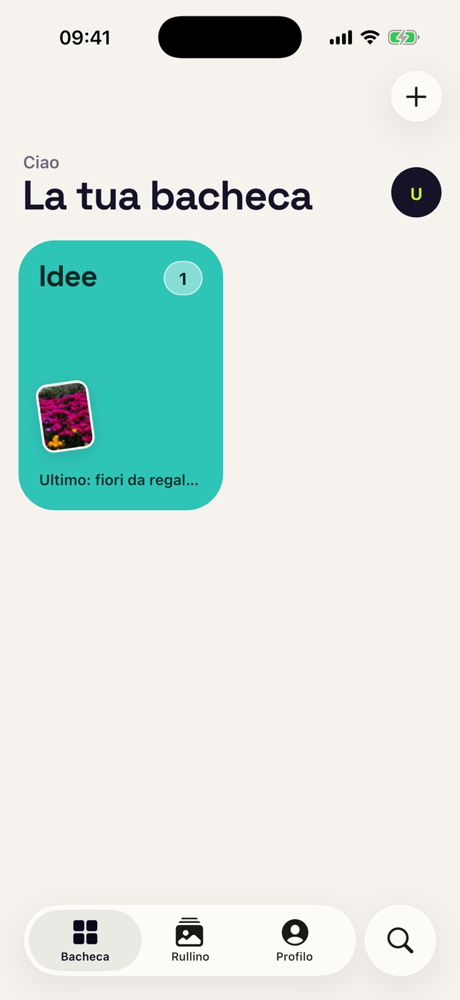
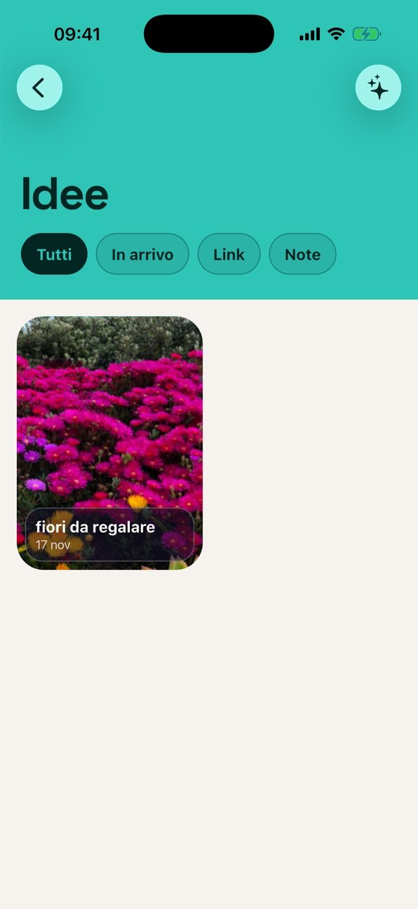
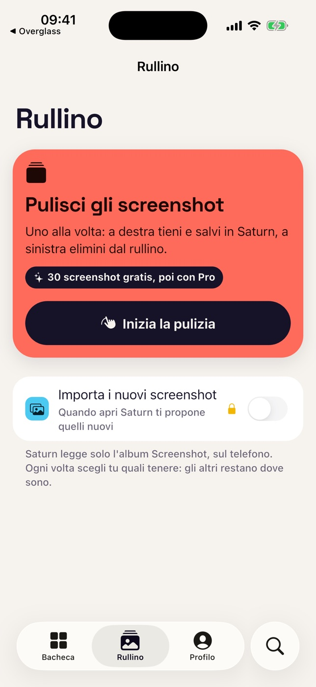
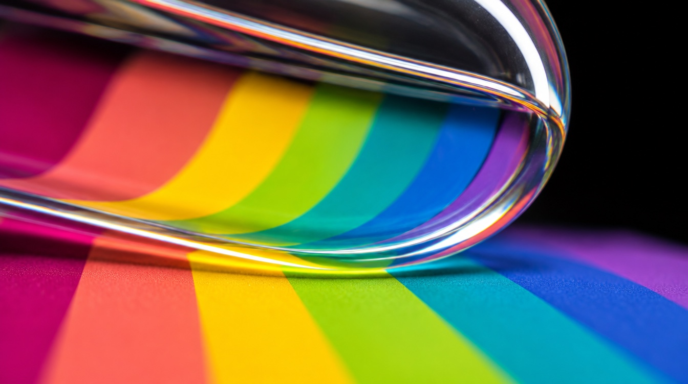

Flutter package · iOS 26
Liquid Glass.
The real one.
overglass floats real iOS system bars, sheets, menus and alerts above your Flutter app. No platform views. No shader imitation.
The bars are not drawn to look like iOS. They are iOS. UINavigationBar, UITabBar and UIMenu, hosted beside your FlutterView, bending the pixels Flutter renders underneath.
Unretouched
Your Flutter list.
Refracted by the system.
This is the example app scrolling on an iOS 26.5 simulator. The tab bar and the top bar are system views. The colours passing through them are a plain ListView.
Screen recording, not a mock-up. On physical devices refraction of Flutter content is still being verified.
How it works
A layer above.
Not a layer inside.
-
01
A sibling of the FlutterView
Liquid Glass belongs to the navigation layer. That layer is small and fixed, so it lives in a host view placed above Flutter instead of inside the widget tree.
-
02
Touches fall through
Anything outside the bars reaches Flutter untouched.
MediaQuery.paddingalready includes the bars, so your content lays out as usual. -
03
One description, native diffs
Each scaffold sends a single declarative description of its bars. Native code applies only what changed. There is no observer to install.
Surfaces
Everything that floats.
Menus, alerts, sheets, tabs that shrink as you scroll. Each one is the control UIKit ships, called from Dart.

UIMenu
UIAlertController
UITabBarController
UINavigationBar · UITabBarUINavigationBarTop bar
Large titles, the system back button, leading and trailing actions.
UITabBarTab bar
Badges, a search tab, an accessory above the tabs.
UISearchBarSearch
In the top bar, or floating above the tab bar.
UISheetPresentationControllerSheets
With Flutter content, a list to pick from, or a date picker.
UIEditMenuInteractionContext menus
On any Flutter widget, with a long press.
UIToolbar · UISegmentedControlToolbar and segments
A bottom toolbar and a segmented control in the top bar.
UIPopoverPresentationControllerPopovers
Text and buttons, anchored to a rect in your layout.
UITabBarControlleriPad sidebar
System tabs that open into a sidebar on larger screens.
Glass capsuleToasts
iOS has no toast of its own, so this one is overglass's design.

Controls
System controls,
when you want them.
Buttons, switches, sliders, gauges and date pickers that sit in the widget tree like any widget. They are platform views, so they come from their own import. Import only the main library and your app creates none.
import 'package:overglass/controls.dart';
OverglassSwitch(value: wifi, onChanged: setWifi),
OverglassSlider(value: volume, onChanged: setVolume),
OverglassButton(
label: 'Save',
style: OverglassButtonStyle.prominent,
onPressed: save,
),One widget
It reads like a Scaffold.
Describe the bars. overglass does the hosting, the sessions and the fallbacks.
OverglassScaffold(
topBar: OverglassTopBar(
title: 'Home',
trailing: [OverglassAction.add(onPressed: add)],
),
tabBar: OverglassTabBar(
currentIndex: tab,
onChanged: (i) => setState(() => tab = i),
items: const [
OverglassTab(label: 'Home', sfSymbol: 'house.fill', icon: myHomeIcon),
OverglassTab(label: 'Search', sfSymbol: 'magnifyingglass', icon: mySearchIcon, badge: '3'),
],
),
body: ListView(children: items), // MediaQuery.padding already includes the bars
);In a real app
Brand on the inside.
System on the outside.
Saturn is built on overglass. Its screens are entirely Flutter, with their own type and colour. The tab bar, the search button and the navigation actions are the system's.



Everywhere else
It knows when
to step back.
Dialogs, sheets, older systems, other platforms. overglass picks what the bars should do, and you can override it with coverPolicy.
- iOS 26+, built with Xcode 26
- Real system controls
- A Flutter dialog covers the page
- Real controls, dimmed and inert
- A new page replaces the scaffold
- Bars stay in place and animate their content
- A bottom sheet covers the page
- A Flutter twin with the iOS 26 geometry
- Older iOS, Android, web, desktop
- Flutter-drawn bars, or your own builders

0
platform views created by the main library
0
shaders pretending to be glass
0.52ms
average raster time on an iPhone 15 Pro at 120 Hz, against 0.57 ms for the same list with no bars
Pre-release, version 0.3.0-dev.2. The performance figure comes from a single run and is preliminary. Glass that scrolls with content is out of scope, and Flutter cannot paint above the native bars. The full list of limits is in the README.
Stop imitating.
Start hosting.
Requires Flutter 3.38.1 or later. Build with Xcode 26 to get Liquid Glass.